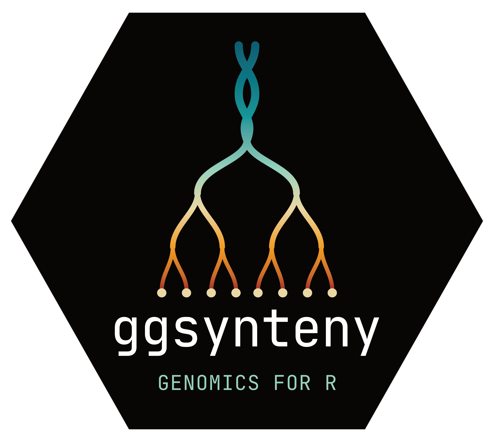
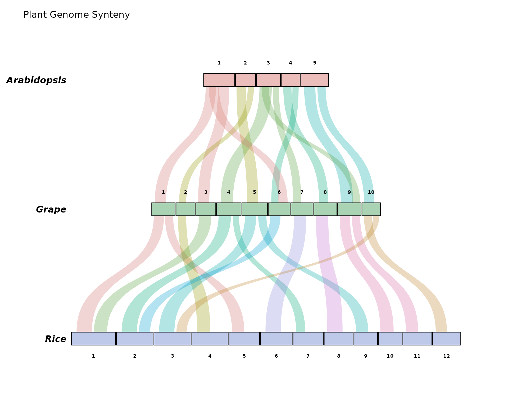
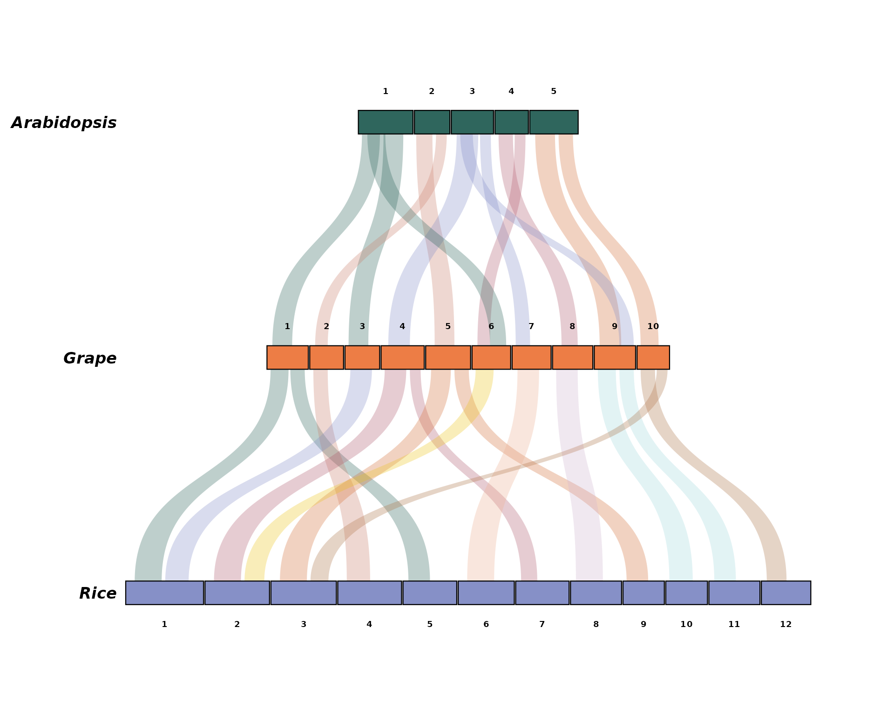
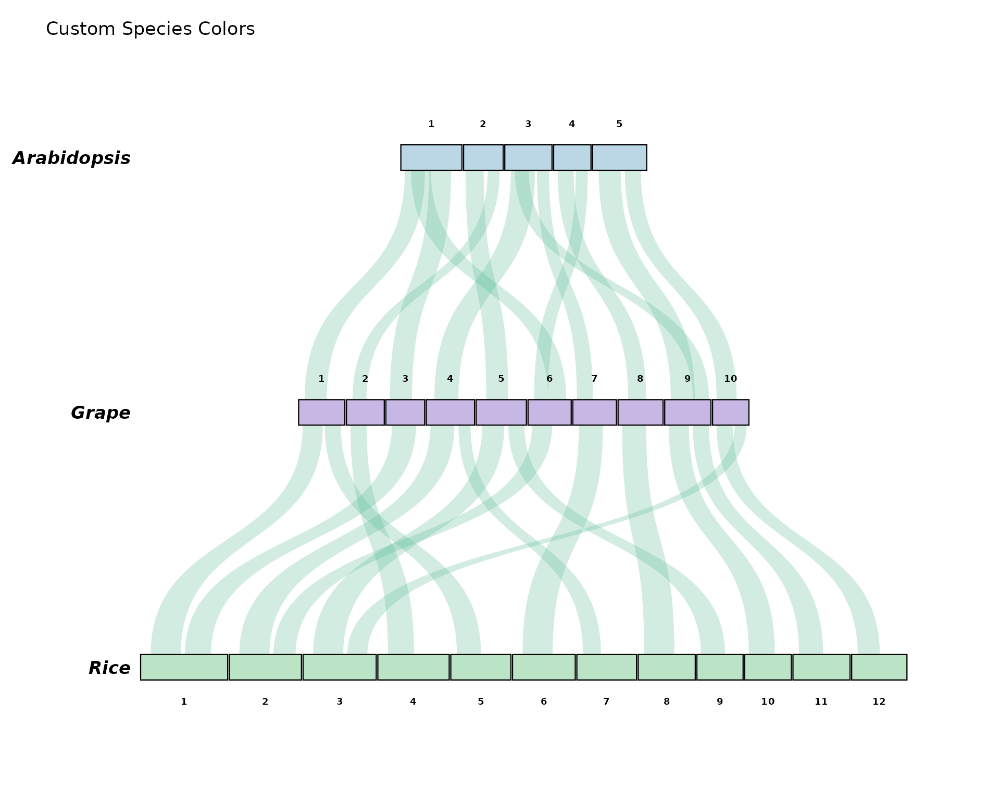
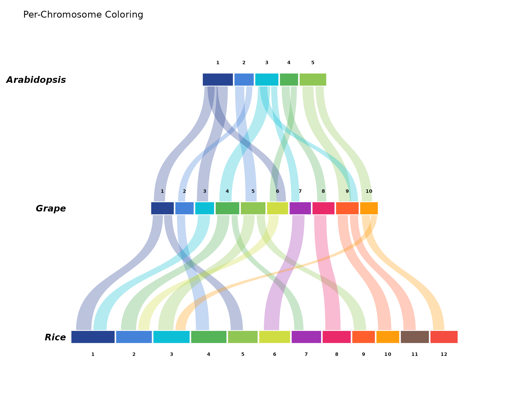
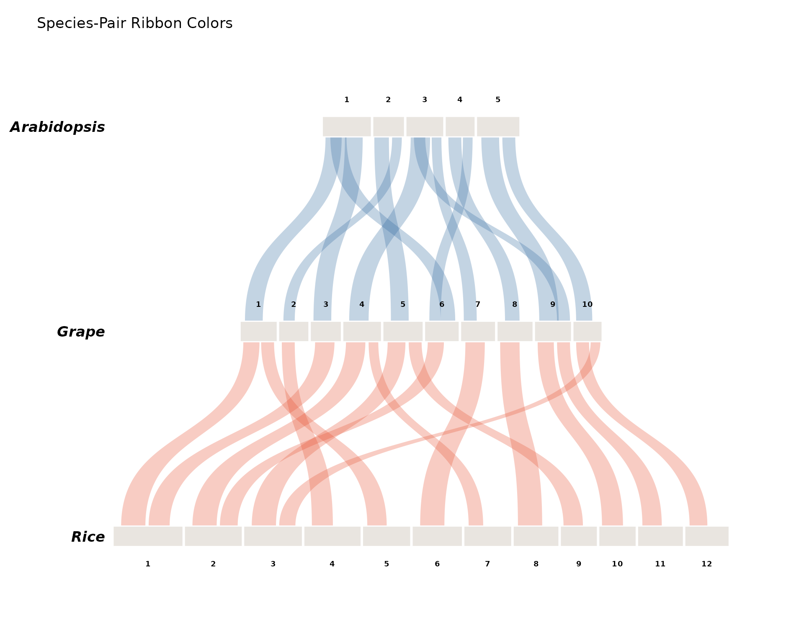
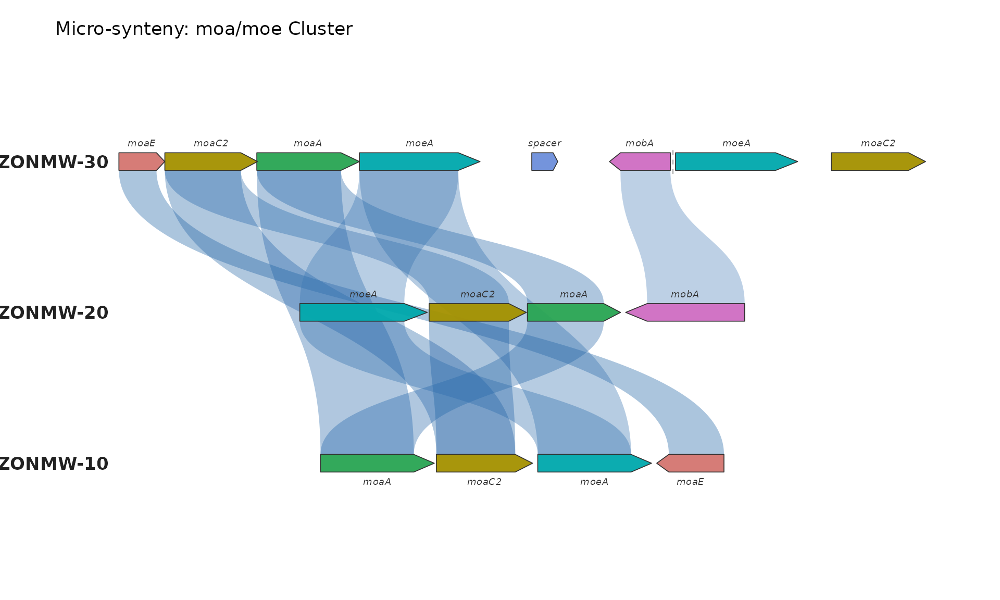
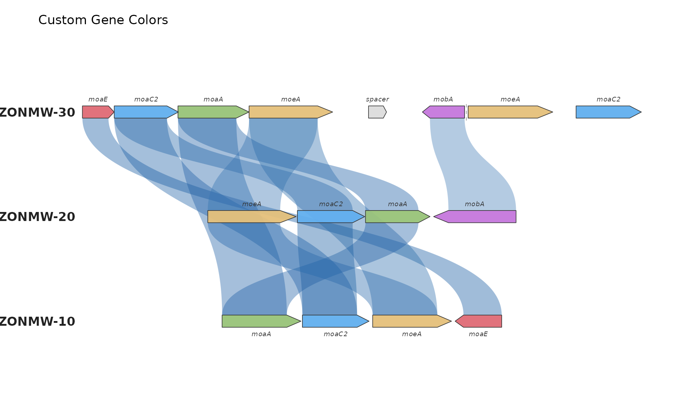
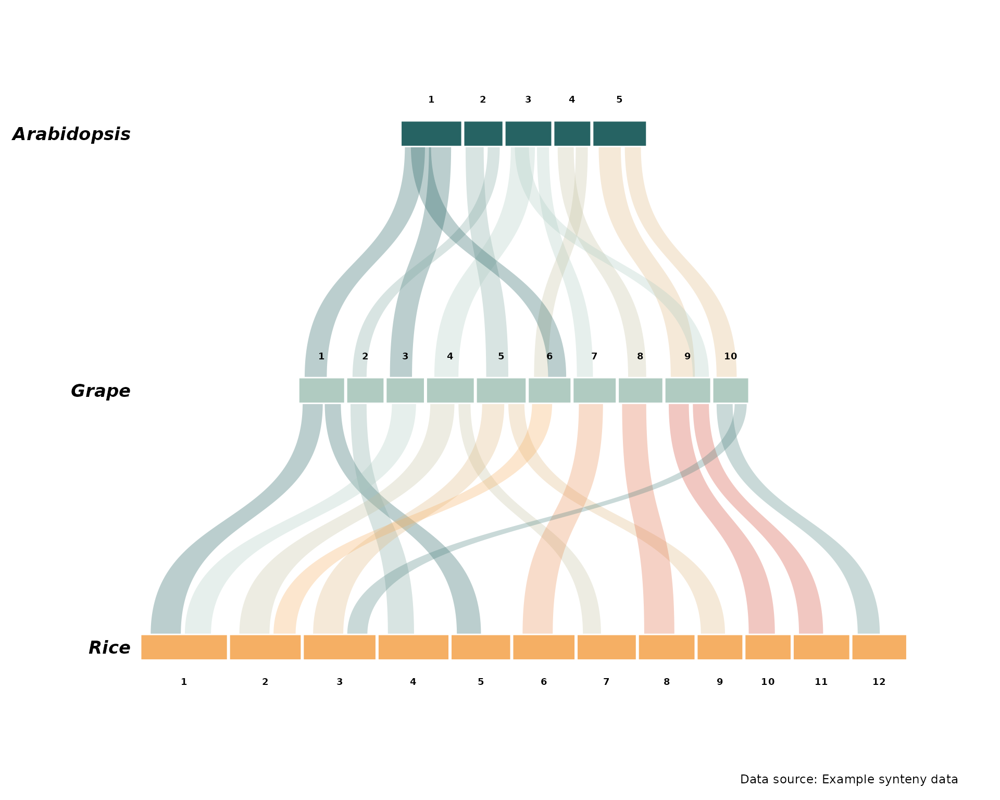

Getting Started with ggsynteny
Your Name
2026-08-30
Source:vignettes/getting-started.Rmd
getting-started.RmdIntroduction
ggsynteny provides tools for creating
publication-quality synteny plots for comparative genomics. This
vignette demonstrates the basic usage of the package.
Macro-Synteny Plots
Basic Example
Let’s start with the bundled example data showing synteny between Arabidopsis, Grape, and Rice:
# Load example data
syn <- example_synteny_data()
# Inspect structure
str(syn)
#> List of 2
#> $ chromosomes: tibble [27 × 3] (S3: tbl_df/tbl/data.frame)
#> ..$ species: chr [1:27] "Arabidopsis" "Arabidopsis" "Arabidopsis" "Arabidopsis" ...
#> ..$ chr : chr [1:27] "1" "2" "3" "4" ...
#> ..$ size : num [1:27] 30.4 19.7 23.5 18.6 26.9 23 18.8 19.3 24 25 ...
#> $ blocks : tibble [27 × 8] (S3: tbl_df/tbl/data.frame)
#> ..$ species1: chr [1:27] "Arabidopsis" "Arabidopsis" "Arabidopsis" "Arabidopsis" ...
#> ..$ chr1 : chr [1:27] "1" "1" "2" "2" ...
#> ..$ start1 : num [1:27] 2 14 1 12 3 16 2 11 3 16 ...
#> ..$ end1 : num [1:27] 12 25 10 18 15 22 10 17 14 24 ...
#> ..$ species2: chr [1:27] "Grape" "Grape" "Grape" "Grape" ...
#> ..$ chr2 : chr [1:27] "1" "3" "5" "2" ...
#> ..$ start2 : num [1:27] 3 2 5 3 4 2 5 3 3 2 ...
#> ..$ end2 : num [1:27] 14 13 16 10 16 10 14 10 15 12 ...The data contains two data frames: - chromosomes:
chromosome sizes for each species - blocks: syntenic block
coordinates
Creating a Basic Plot
# Define species order (top to bottom)
sp_order <- c("Arabidopsis", "Grape", "Rice")
# Create plot
p1 <- plot_synteny(syn,
species_order = sp_order,
title = "Plant Genome Synteny")
print(p1)
Using the Built-in Palettes
Every palette argument accepts, by name, all 32 palettes
of the ltc
package (vendored, so ltc need not be installed). One palette can
drive the whole plot:
p_pal <- plot_synteny(syn, sp_order, palette = "casa_natal")
print(p_pal)
List them all with syn_palettes(); names match
case-insensitively and ignore spaces, underscores, and dashes:
names(syn_palettes())
#> [1] "paloma" "maya" "dora" "ploen" "olga"
#> [6] "mterese" "gaby" "franscoise" "fernande" "sylvie"
#> [11] "expevo" "minou" "kiss" "hat" "reading"
#> [16] "alger" "trio1" "trio2" "trio3" "trio4"
#> [21] "heatmap0" "pantone23" "remains" "midnight" "lincoln"
#> [26] "luminaries" "seafarer" "shuggie" "heatmap1" "heatmap2"
#> [31] "heatmap3" "casa_natal"Customizing Colors
Per-Species Chromosome Colors
p2 <- plot_synteny(syn, sp_order,
chr_fill = "per_species",
chr_palette = c(
"Arabidopsis" = "#B8D4E3",
"Grape" = "#C5B4E3",
"Rice" = "#B8E3C5"
),
ribbon_fill = "uniform",
ribbon_palette = "#50B88E",
ribbon_alpha = 0.25,
title = "Custom Species Colors")
print(p2)
Per-Chromosome Colors
# Define color palette for chromosomes 1-12
chr_pal <- c("1"="#1B3A8C", "2"="#3B7DD8", "3"="#00BCD4", "4"="#4CAF50",
"5"="#8BC34A", "6"="#CDDC39", "7"="#9C27B0", "8"="#E91E63",
"9"="#FF5722", "10"="#FF9800", "11"="#795548", "12"="#F44336")
p3 <- plot_synteny(syn, sp_order,
chr_fill = "per_chr",
chr_palette = chr_pal,
ribbon_fill = "source_chr",
ribbon_palette = chr_pal,
title = "Per-Chromosome Coloring")
print(p3)
Species-Pair Ribbon Colors
p4 <- plot_synteny(syn, sp_order,
chr_fill = "uniform",
chr_palette = "#E8E4DF",
ribbon_fill = "species_pair",
ribbon_palette = c(
"Arabidopsis_Grape" = "#3A6EA5",
"Grape_Rice" = "#E8573A"
),
title = "Species-Pair Ribbon Colors")
print(p4)
Micro-Synteny Plots
Basic Example
Micro-synteny plots show gene-level conservation:
# Load microsynteny example
micro <- demo_microsynteny_data()
# Inspect structure
str(micro)
#> List of 2
#> $ features:'data.frame': 16 obs. of 7 variables:
#> ..$ bin_id : chr [1:16] "ZONMW-30" "ZONMW-30" "ZONMW-30" "ZONMW-30" ...
#> ..$ seq_id : chr [1:16] "4" "4" "4" "4" ...
#> ..$ start : num [1:16] 0 444 1333 2325 3991 ...
#> ..$ end : num [1:16] 443 1340 2325 3491 4242 ...
#> ..$ strand : chr [1:16] "+" "+" "+" "+" ...
#> ..$ feat_id: chr [1:16] "moaE_30" "moaC2_30" "moaA_30" "moeA_30" ...
#> ..$ name : chr [1:16] "moaE" "moaC2" "moaA" "moeA" ...
#> $ links :'data.frame': 11 obs. of 3 variables:
#> ..$ feat_id_a: chr [1:11] "moaE_30" "moaC2_30" "moaC2_30" "moaA_30" ...
#> ..$ feat_id_b: chr [1:11] "moaE_10" "moaC2_20" "moaC2_10" "moaA_20" ...
#> ..$ identity : num [1:11] 95.2 88.4 91 93.1 89.7 78.3 82.1 71.5 94.3 90.2 ...The data contains: - features: gene coordinates, strand,
and names - links: homology relationships with identity
scores
Creating a Gene-Level Plot
p5 <- plot_microsynteny(micro$features,
micro$links,
bin_order = c("ZONMW-30", "ZONMW-20", "ZONMW-10"),
gene_fill = "per_name",
ribbon_fill = "identity",
title = "Micro-synteny: moa/moe Cluster")
print(p5)
Custom Gene Colors
# Define custom gene colors
gene_pal <- c(
moaE = "#E06C75",
moaC2 = "#61AFEF",
moaA = "#98C379",
moeA = "#E5C07B",
mobA = "#C678DD",
spacer = "#DDDDDD"
)
p6 <- plot_microsynteny(micro$features,
micro$links,
bin_order = c("ZONMW-30", "ZONMW-20", "ZONMW-10"),
gene_fill = "per_name",
gene_palette = gene_pal,
ribbon_fill = "identity",
ribbon_alpha = 0.40,
title = "Custom Gene Colors")
print(p6)
Reading Your Own Data
TSV Format
# Read your own TSV files
syn <- read_synteny_tsv("my_chromosomes.tsv", "my_blocks.tsv")
p <- plot_synteny(syn, species_order = c("SpeciesA", "SpeciesB", "SpeciesC"))MCScanX Format
# Parse MCScanX output
syn <- read_mcscanx("output.collinearity", "output.gff")
p <- plot_synteny(syn, species_order = c("Species1", "Species2"))GENESPACE Format
# Parse GENESPACE output
syn <- read_genespace("synHits.tsv")
p <- plot_synteny(syn, species_order = c("genome1", "genome2", "genome3"))Advanced Customization
Since ggsynteny returns ggplot2 objects, you can further
customize them:
p7 <- plot_synteny(syn, sp_order,
chr_fill = "per_species",
ribbon_fill = "source_chr") +
theme(plot.background = element_rect(fill = "white", color = NA)) +
labs(caption = "Data source: Example synteny data")
print(p7)
Session Info
sessionInfo()
#> R version 4.6.1 (2026-06-24)
#> Platform: x86_64-pc-linux-gnu
#> Running under: Ubuntu 24.04.4 LTS
#>
#> Matrix products: default
#> BLAS: /usr/lib/x86_64-linux-gnu/openblas-pthread/libblas.so.3
#> LAPACK: /usr/lib/x86_64-linux-gnu/openblas-pthread/libopenblasp-r0.3.26.so; LAPACK version 3.12.0
#>
#> locale:
#> [1] LC_CTYPE=C.UTF-8 LC_NUMERIC=C LC_TIME=C.UTF-8
#> [4] LC_COLLATE=C.UTF-8 LC_MONETARY=C.UTF-8 LC_MESSAGES=C.UTF-8
#> [7] LC_PAPER=C.UTF-8 LC_NAME=C LC_ADDRESS=C
#> [10] LC_TELEPHONE=C LC_MEASUREMENT=C.UTF-8 LC_IDENTIFICATION=C
#>
#> time zone: UTC
#> tzcode source: system (glibc)
#>
#> attached base packages:
#> [1] stats graphics grDevices utils datasets methods base
#>
#> other attached packages:
#> [1] ggplot2_4.0.3 ggsynteny_0.3.0
#>
#> loaded via a namespace (and not attached):
#> [1] gtable_0.3.6 jsonlite_2.0.0 dplyr_1.2.1 compiler_4.6.1
#> [5] tidyselect_1.2.1 jquerylib_0.1.4 systemfonts_1.3.2 scales_1.4.0
#> [9] textshaping_1.0.5 yaml_2.3.12 fastmap_1.2.0 readr_2.2.0
#> [13] R6_2.6.1 labeling_0.4.3 generics_0.1.4 knitr_1.51
#> [17] htmlwidgets_1.6.4 tibble_3.3.1 desc_1.4.3 tzdb_0.5.0
#> [21] bslib_0.12.0 pillar_1.11.1 RColorBrewer_1.1-3 rlang_1.3.0
#> [25] cachem_1.1.0 xfun_0.60 fs_2.1.0 sass_0.4.10
#> [29] S7_0.2.2 otel_0.2.0 cli_3.6.6 withr_3.0.3
#> [33] pkgdown_2.2.1 magrittr_2.0.5 digest_0.6.39 grid_4.6.1
#> [37] hms_1.1.4 lifecycle_1.0.5 vctrs_0.7.3 evaluate_1.0.5
#> [41] glue_1.8.1 farver_2.1.2 ragg_1.5.2 rmarkdown_2.31
#> [45] tools_4.6.1 pkgconfig_2.0.3 htmltools_0.5.9